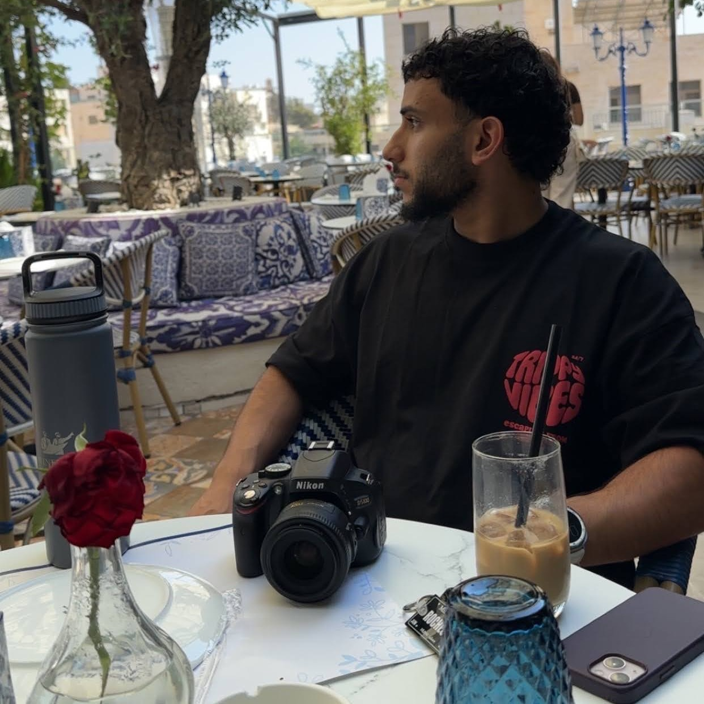
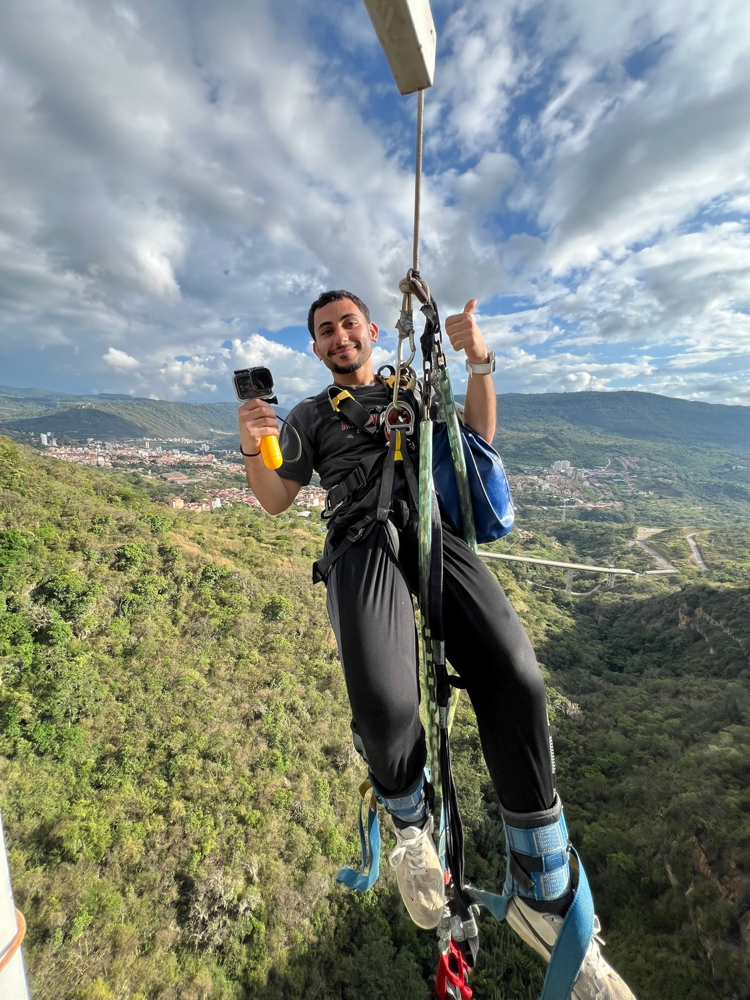
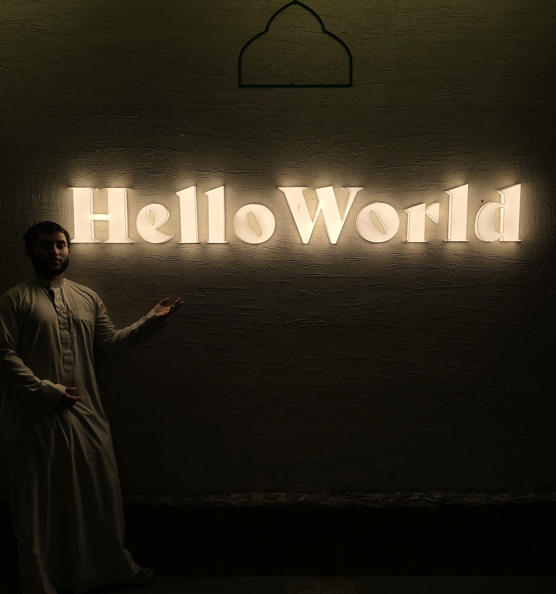
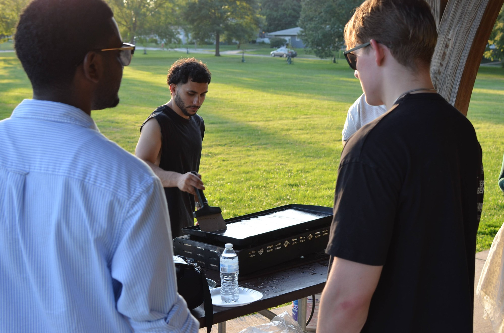

Iowa City
M.S. Electrical & Computer Engineering. Software engineering*. Solutions that help people.
B.S.E. Biomedical · Voss Lab · IHuman · formerly VSR
Software Engineering subprogram in Iowa’s ECE graduate program — my M.S. focus.
Life
A lot of my early jobs were in kitchens and food service. Some of that was tuition and rent — but I also stuck with it because I like cooking. Feeding people, timing a grill, figuring out a dish until it tastes right: that part never felt like busywork to me. Away from work and school, I’m usually behind a camera or on a motorcycle — same itch to pay attention, move through a place, and come back with something that stuck.
I like traveling when I can — new cities, long roads, quiet stretches of nature, and the occasional jump that gets the heart rate up. The Lens photos are mostly that: places I wanted to stand in for a minute, and the kind of adrenaline that makes you laugh when you’re back on the ground.
Work
-
Software Engineer · HBC, University of Iowa · Jun 2026 – Present
- Cut cohort-review busywork for 295 BOOST OBS subjects — JATOS dumps → auto GGIR → REDCap checks → Python debrief reports.
- Automated JATOS pulls, Globus transfers, and HPC jobs syncing 110 GB+ of multi-source study data on weekly pipelines.
- Shipped researcher-facing QC/debrief tooling that replaces spreadsheet triage with repeatable lab review.
-
Systems Engineer · Iowa City · May 2025 – Present
- Cut install weight ~70% across 5 simulation apps with an S3-backed C# release system (merge → rebuild → version/size JSON → S3).
- Integrated C#/.NET UI with C++ Diligent rendering; 100% regression pass on the delivery path.
- Cleared cross-platform build, dependency, and runtime defects that blocked shippable releases.
-
Research Software Engineer · University of Iowa · Mar 2026 – May 2026
- Embedded a MuJoCo physics loop in Santos’s 215-DOF engine via legacy C#/C++ interop.
- Fixed zero-mass bodies, frame mismatches, and anchors that blocked MuJoCo load/render.
- Rewrote a decade-old Santos manual (200+ pages) and documented the Santos-to-MJCF handoff.
-
Software Engineer · Virtual Soldier Research · Apr 2024 – Mar 2026
- Maintained a 140+ project C++/C#/.NET/Fortran biomechanical simulation suite.
- Owned GitLab CI and Santos kinematics-to-graphics pipelines across the multi-language stack.
- Triaged compile/runtime defects that kept the suite usable under concurrent project load.
-
Undergraduate Researcher · Medical Imaging Lab · Aug 2025 – Dec 2025
- Built a multithreaded Python/BART MRI reconstruction pipeline across 4 GPUs — about 5× faster.
- Automated ingest/validation so self-supervised manifold-learning got clean scan inputs.
- Prepared validated multi-scan datasets for repeatable reconstruction experiments.
Built
-
Arteria
GitHubSolo research desktop app for urban traffic and road-network structure. It finds topological chokeholds — forced bottlenecks — not just slow segments: Brandes edge betweenness, Hopcroft–Tarjan bridges, and detour importance on OSM graphs, with optional live vs free-flow traffic overlays, historical congestion prediction, and SQLite study stores for road-optimization experiments.
- C#
- .NET 8
- Avalonia
- Mapsui
- OSM
- SQLite
-
SlamNav
GPS-denied indoor mapping on Android and iOS. A shared C++ RTAB-Map layer produces point clouds, 3D meshes, labels, and routes in-app, with a Kotlin Multiplatform UI bridged through JNI and Objective-C, and sensing/rendering native on ARCore and ARKit.
- Kotlin Multiplatform
- C++
- RTAB-Map
- Swift
- ARCore
- ARKit
-
AlamirAuto
Live siteFull-stack dealership marketplace: TypeScript/React storefront with data-driven filters and search, Node/MongoDB backend, and role-based admin paths so staff can create and manage listings, run daily backups, and update inventory without exposing staff-only controls on the customer site.
- TypeScript
- React
- Node.js
- MongoDB
- Full-Stack
-
3D Cartilage Visualization & Analysis
Senior design software for Discrete Element Analysis (DEA) on bone meshes derived from CT scans — simulating how cartilage distributes across the surface so clinicians and researchers can inspect load patterns in 3D instead of guessing from 2D slices. C#/.NET drives the app, with a C++ wrapper into a MATLAB SDK for the numerical core.
- C# / .NET
- C++ (Wrapper)
- MATLAB (SDK)
- Medical Imaging
-
CircSim
A full-featured circuit analysis tool built from scratch in C for the TI-84 — UX/UI included — with solvers for nodal analysis, Thévenin equivalents, and related modes under calculator memory limits (~199K+ byte codebase). Structured so new analysis modes can extend the engine without a full rewrite.
- C
- Embedded Systems
- TI-84
- ECE
-
Real-Time System Hooking Tool
A C++ systems utility for researching Windows API hooking, inter-process communication, and real-time data extraction from sandboxed applications — the kind of low-level plumbing you need when studying how processes talk without a friendly public API.
- C++
- Windows API
- DLL Injection
- Systems
-
Python Research Analysis Tools
Custom Python scripts for mini-analysis and post-analysis of quantitative research data — cleaning runs, summarizing cohorts, and auto-generating graphs so non-technical partners can read results without digging through raw tables.
- Python
- Pandas
- NumPy
- Matplotlib
-
2D Physics Game Engine
A 2D game in Swift with a custom physics engine and polygon-based collision detection — a ship that can dynamically “chip away” at target blocks. Separated render, event, and object concerns so the simulation stays playable under interactive load.
- Swift
- SpriteKit
- Game Dev
- Physics
Also: Quixotic (JS/GLSL modular engine) · DHM 2025 co-author · Santos / Army Combat Fitness Test
Lens
Meet the person first — then the engineer.
Agentic tools are everywhere; humanity still counts.




PDF preview blocked here. Download the resume instead — links to GitHub and LinkedIn are inside.